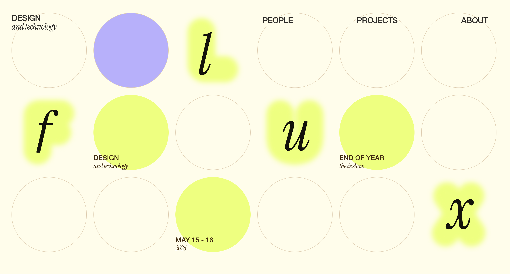
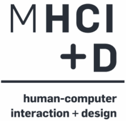
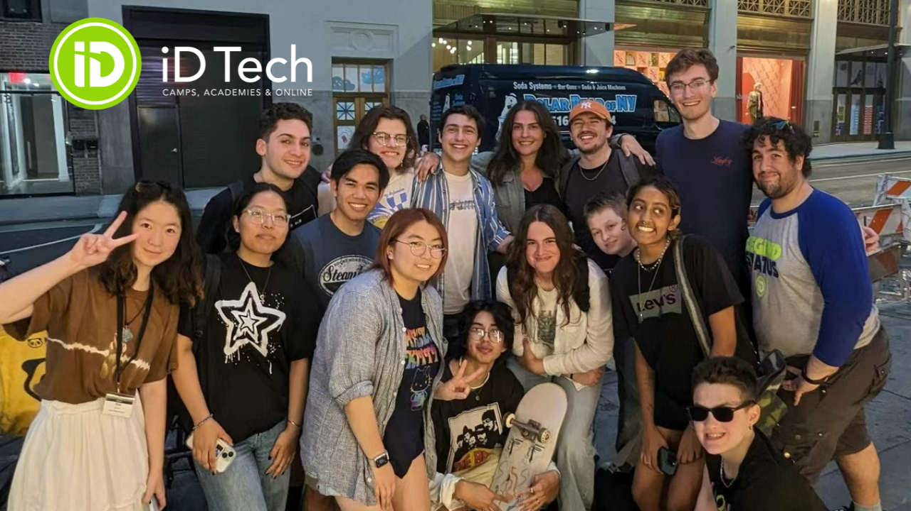
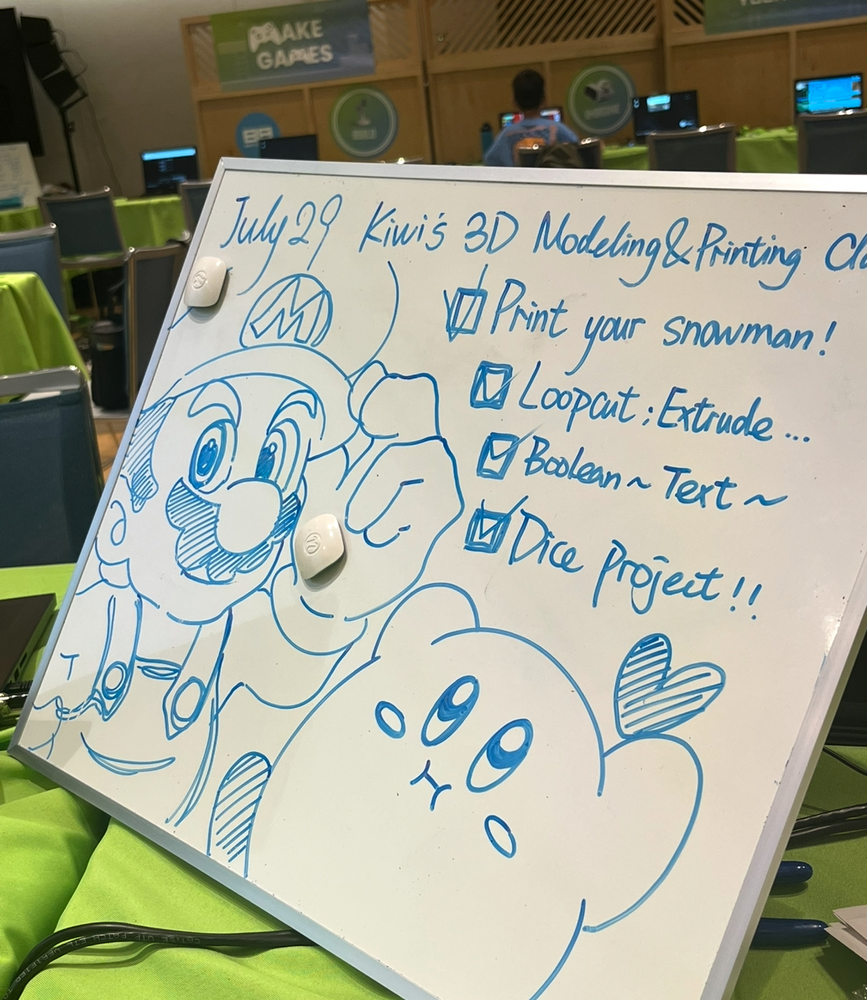
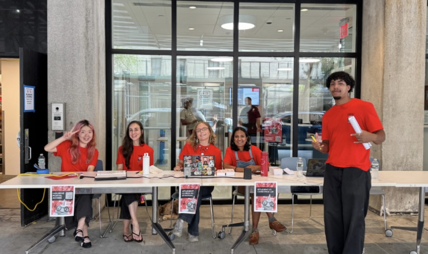
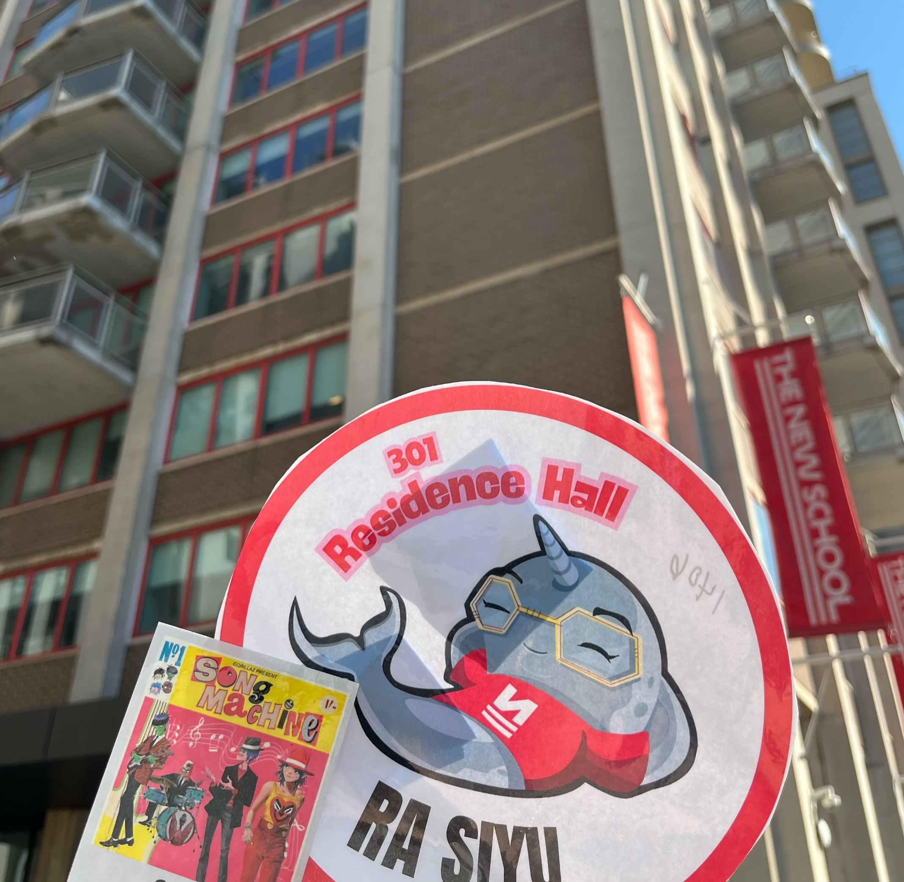
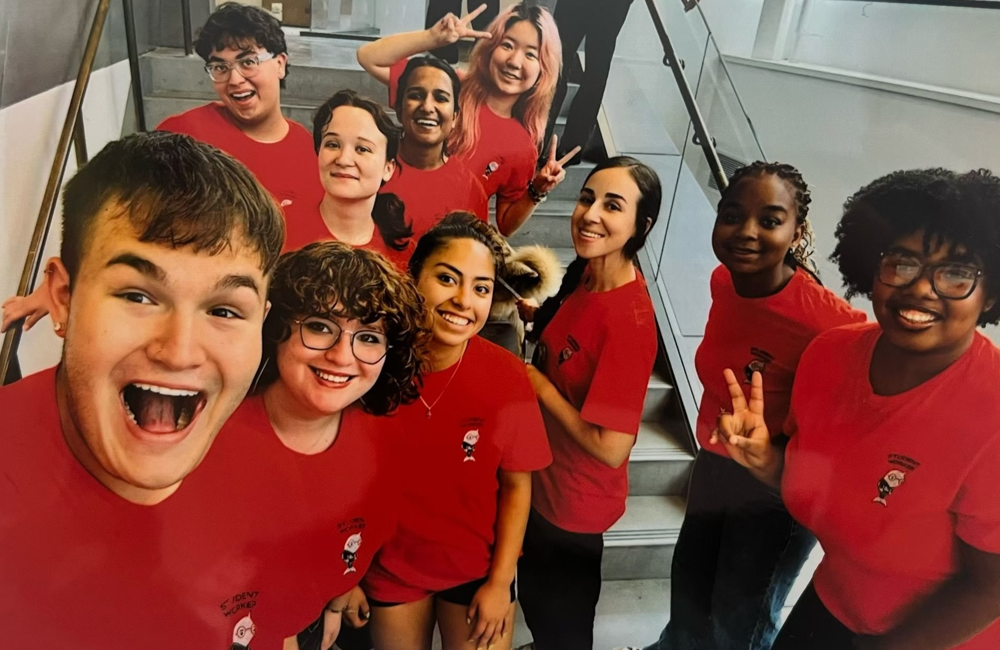
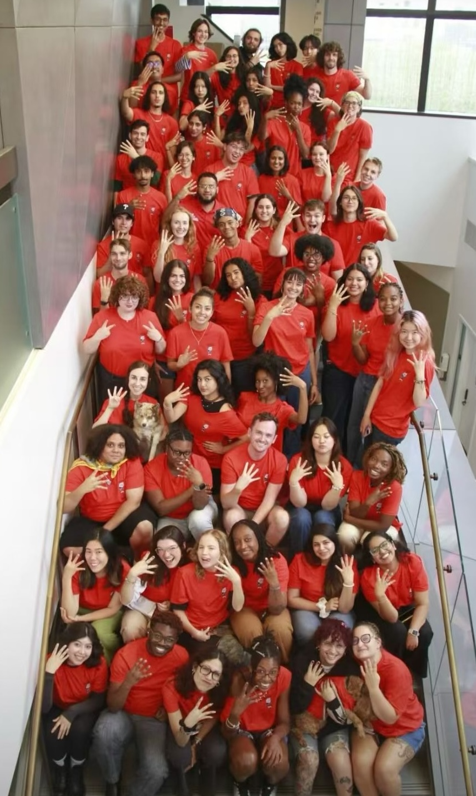

Team Lead
Design & Technology Thesis Committee
Project Management | Cross-team Coordination

I'm a product designer focused on identifying gaps in user experiences and turning them into intuitive interactions. I look beyond primary flows to understand what's missing.
I've explored how many e-commerce platforms prioritize conversion at checkout but overlook the post-purchase journey, and proposed ways to improve that experience.
I enjoy integrating AI into my workflow to rapidly prototype and validate ideas, while critically examining its limitations like bias and lack of inclusivity.
When I'm not designing, you'll find me at musicals and concerts🎭, exploring museums🖼️, playing games🎮, yapping with friends🗣️, or baking pastries👩🏻🍳🍪.
B.F.A. Design and Technology, GPA 3.99
Aug 2022 - May 2026M.S. Human-Computer Interaction & Design
Expected in Aug 2027

Aphrodite Brands Group LLC
UX Research | E-Commerce | AI Prototyping
Aug 2025 - May 2026
BNU Corporation
Responsive Web | Localization | Motion Graphics
Summer 2024
UX/UI: User Flows, Wireframes, Prototyping, Design Systems, Rapid Iteration, Competitive Analysis, Journey Maps, Usability Testing
Tools: Figma, AI-Driven Tools (Cursor, Claude, Figma Make, Framer), Vibe Coding, HTML/CSS/JavaScript, Adobe Creative Suite, CMS Platforms
Others: Graphic Design, Unity, Arduino, CAD, TouchDesigner, Photography
Design & Technology Thesis Committee
Project Management | Cross-team Coordination

iD Tech Camps
Adobe CS | 3D Modeling | Communication


The New School Residential Education
Community Building | Conflict Mediation



